© 2020 Strides Running Club at UCSD
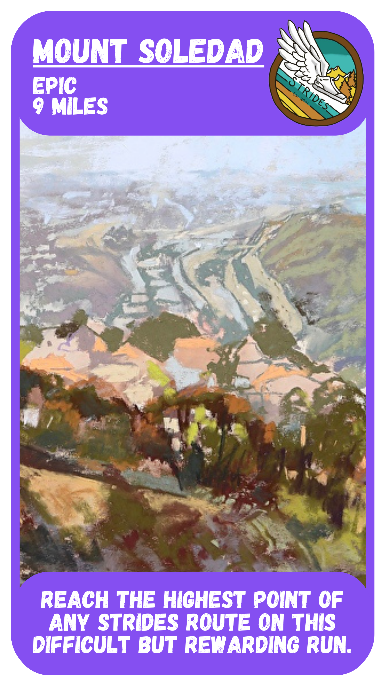
After a tough run with a brutally long (and steep) incline, reward yourself with a beautiful view of the city! Sunrise runs up Mount Soledad are a bucket list item. The top is spectacular in itself.
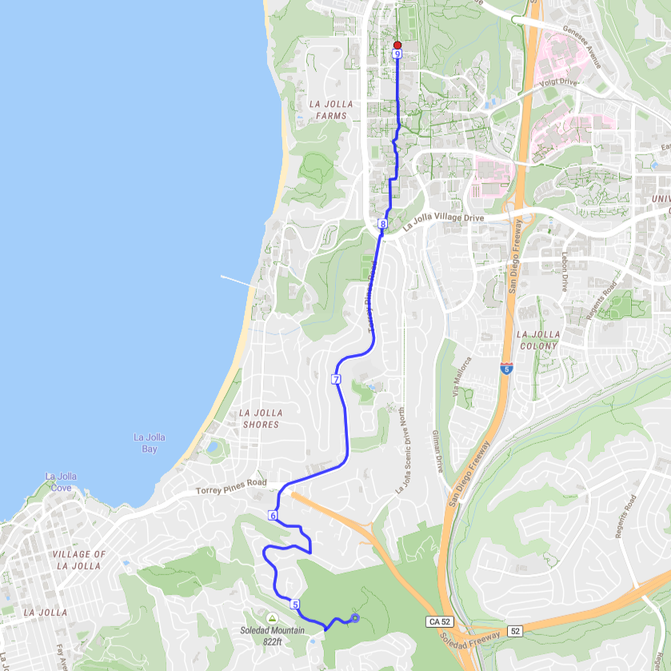
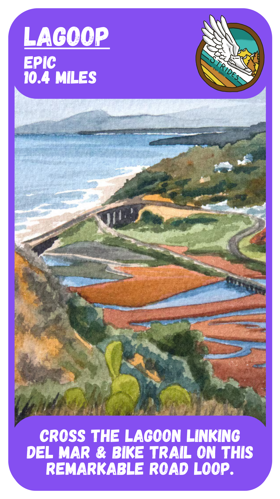
Connect Del Mar and Bike Trail with this long road run around Los Peñasquitos Lagoon! The loop can be run in either direction, depending on which uphill/downhill combo you prefer.
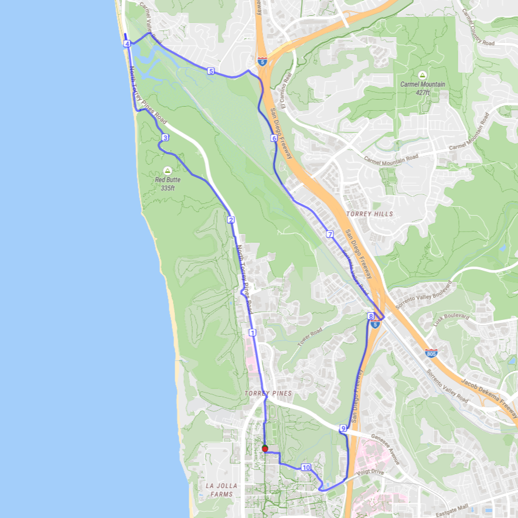
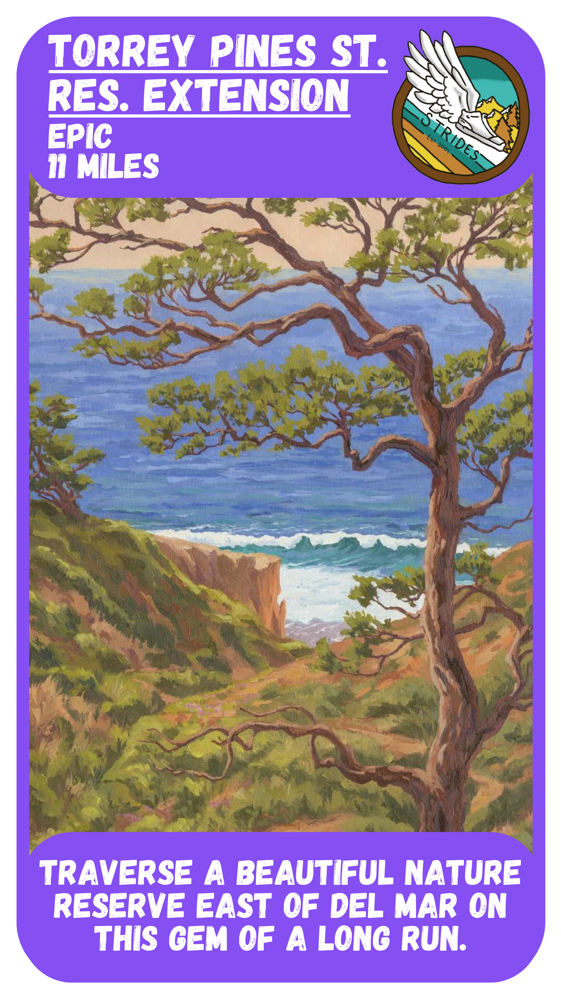
Unbeknownst to many, Torrey Pines has a second state reserve! Head up into Del Mar, then loop down through the reserve on a pretty trail. This route features some great views of Del Mar!
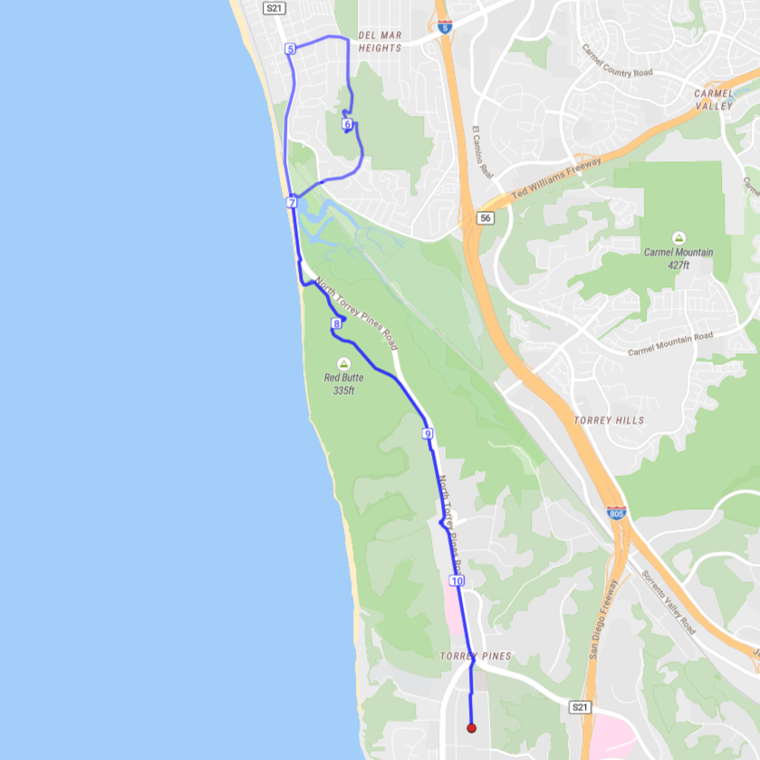
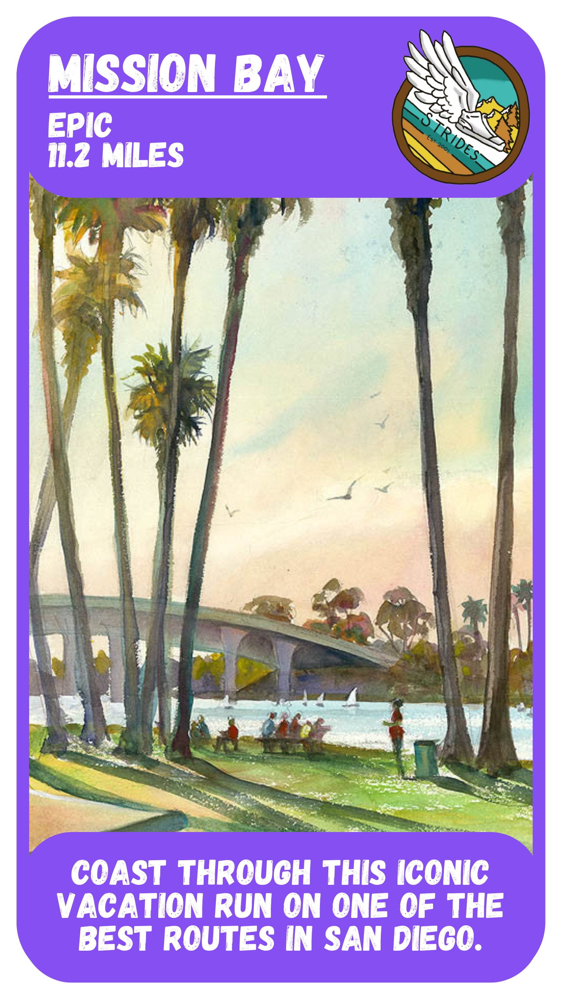
One of San Diego’s most beautiful routes, and a frequent vacation run for Strides! We’ll often have 3, 5.7, 8.2, and 11.2 mile groups. You can’t go wrong with Mission Bay, good friends and good music.
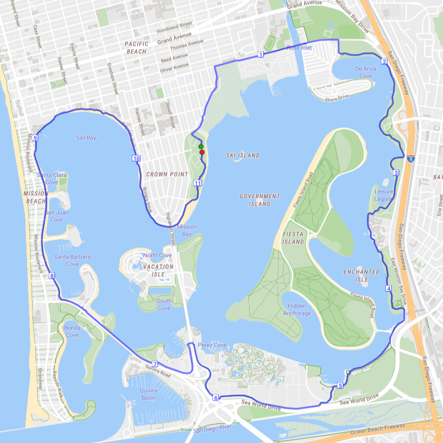
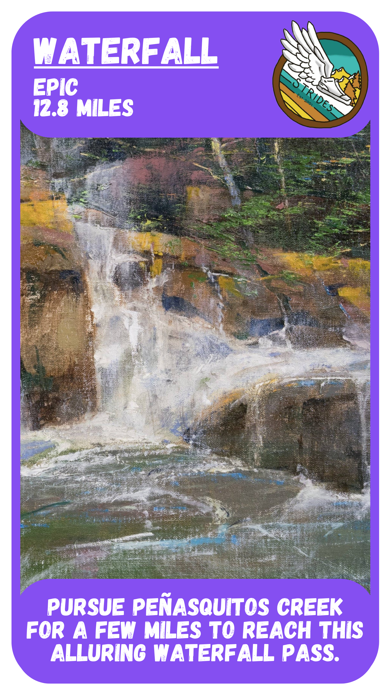
Turn off of Peñasquitos trail to reach a small but charming Waterfall pass! There are lots of boulders to climb and tiny trails to explore. Luckily for your run back to campus, taking a dip is optional.
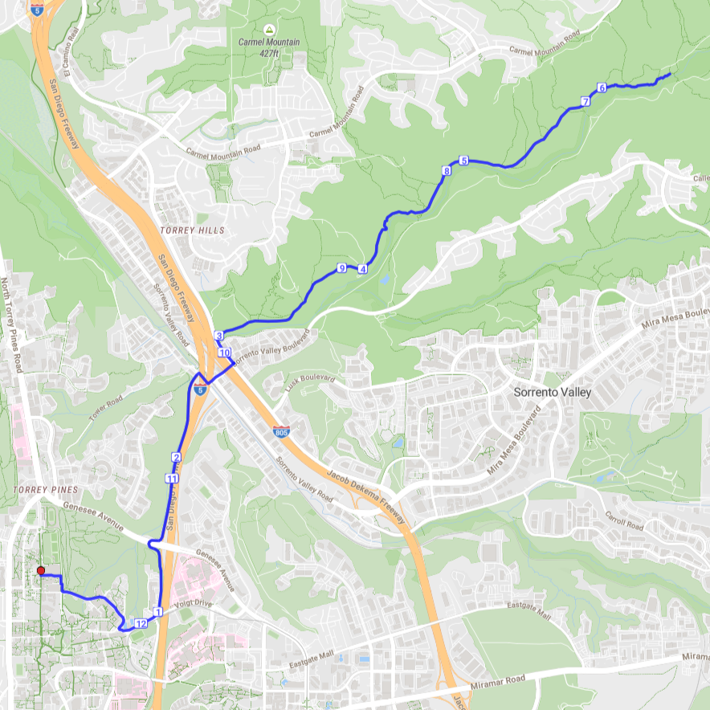
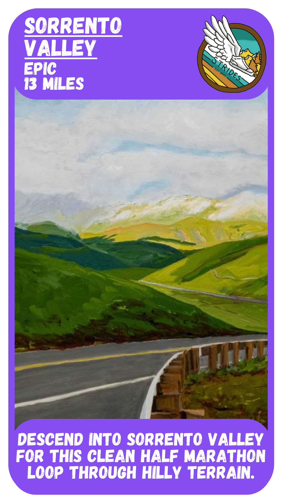
A solid route if you’re looking to get in a half marathon (almost), want to explore a new area of San Diego, and don’t mind running on sidewalks! The middle point of the route holds a majestic view.
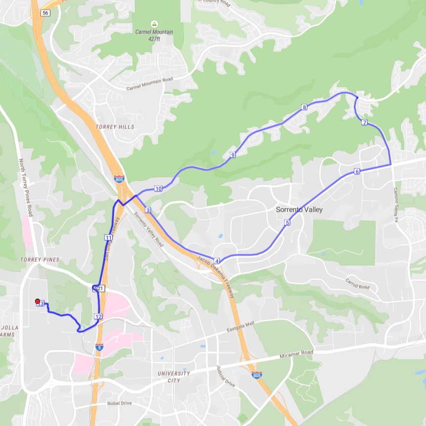
© 2020 Strides Running Club at UCSD